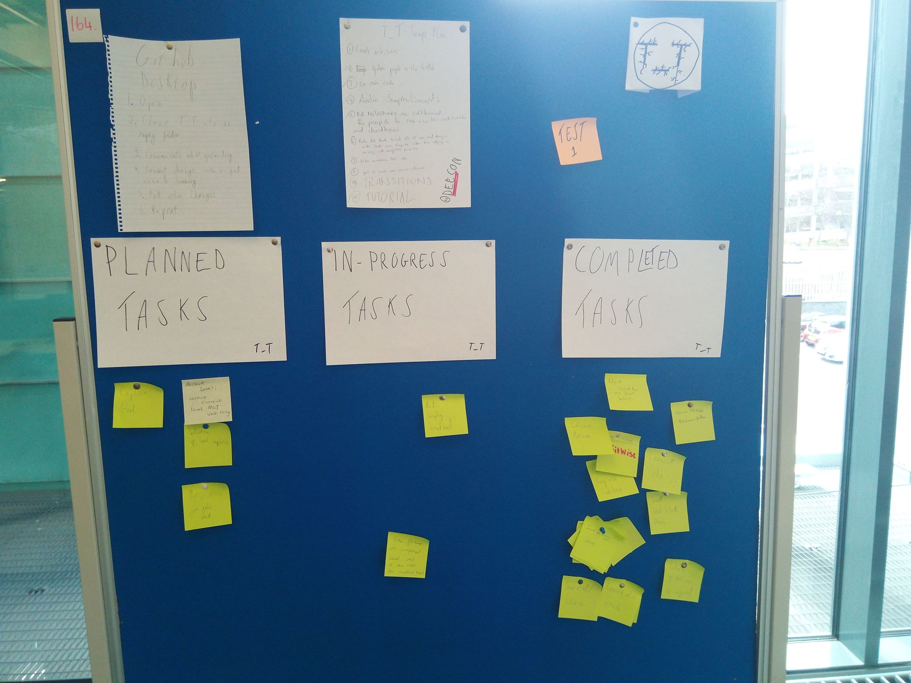
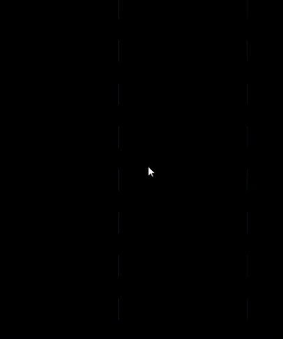
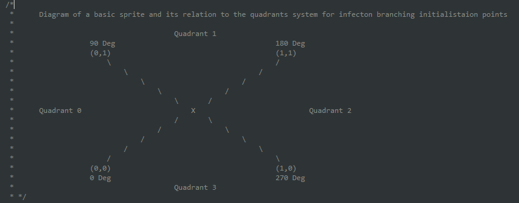

This project was built with:
The Team: Myself: Programmer/Manager Rory McLean: Programmer Iain Lauchlan Mcleod: Audio Jamie Brady: Artist Nishita Gupte: Designer (Brought on after Game Jam, during later development)  This project is the culmination of a 2 total weeks worth of work, beginning with the 48-hour stretch of the 2018 Global Game Jam then continuing with a week and a half of SCRUM-like goals, until the final product was created and the team returned to coursework for the Mprof Games Development. I am responsible for the time and work goal management of the team and implementation of the main infection mechanic, levels 1,3,5,6,7,and 8, the cut-scene scripting, and the procedural infection graphics. The procedural infection graphics were something I had a strong interest in taking forward as a re-usable robust tool - time has been spent optimising it.  This diagram is included in the script itself - detailing how the coordinates of the prior infector object gets translated to the sprite's custom coordinates so that the angle of the initial infection can be calculated. Script can be viewed alone here.